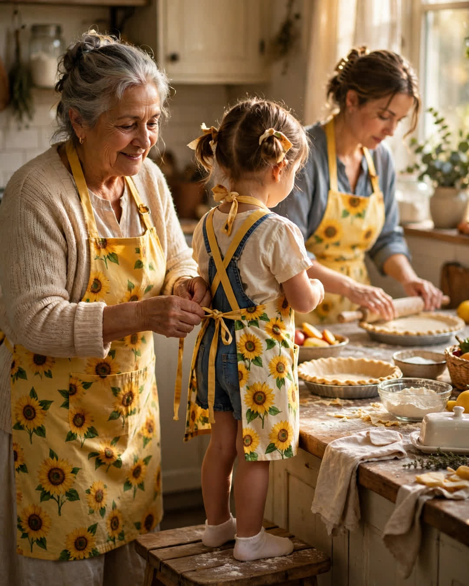

The Matching Aprons
A Clipp Kaili original story

The aprons were ridiculous, and that was the entire point — yellow, covered in sunflowers, with ruffles that served no purpose God ever intended for a kitchen.
My mother bought them the year I turned ten, one big and one small, from a church craft fair, and declared that we were now "a professional operation." Every fall after that, for the St. Mark's bake sale, we wore those aprons and we baked — pies, mostly, and a coffee cake that won a blue ribbon in 2004 that my mother still references like a professional credential.
The rule was simple and it was law: the aprons went on before the flour came out, and they did not come off until the last pie was boxed. In those aprons, she taught me everything that actually matters in a kitchen, which is very little about baking and almost everything about life. How to tell when something is done by smell, not by timer. How to rescue a mistake instead of mourning it — "a cracked pie is just a pie that's already serving itself, baby." How a kitchen should always make one extra of whatever it is making, because somebody's day, somewhere nearby, is worse than yours and about to improve.
We baked in those aprons the fall before she married my stepfather, both of us nervous, neither of us saying so, the pie crust absorbing what we couldn't. We baked in them the fall after my father died, in a kitchen so quiet the oven sounded loud, and she tied my apron strings for me that year because my hands would not stop shaking — I was twenty-nine years old and she tied them like I was ten, and it was exactly right.
The aprons faded. The sunflowers went pale. Hers got a burn mark shaped like Florida. Mine got a tear I sewed with red thread because it was what the drawer had, and she declared the repair "our brand."
Last fall was the first bake sale she watched from a chair. Her hands, which could roll a crust thin as paper, have stiffened — the doctor has a long name for it that she refuses to use, preferring "my hands are retired, not broken." She sat in her kitchen in the big sunflower apron, doing quality control with a fork, and she directed the whole operation like a general in ruffles while I baked and my daughter — seven years old, perched on a stool, desperate to be included — kept sneaking chocolate chips.
Halfway through the morning, my mother disappeared into her bedroom. She came back carrying something folded in tissue paper, and she laid it on the counter with ceremony, the way you'd set down something christened.
It was a third apron. Small. Yellow. Sunflowers. Brand-new, with the ruffles at full ridiculousness, bought who knows when and kept in a drawer against this exact day.
"An operation expands," she said.
My daughter put it on over her pajamas. It reached her ankles. She stood on the stool in it, chin up, holding a wooden spoon like a scepter, and my mother reached out with her retired hands and slowly, carefully tied the strings behind her back.
There are photographs of that morning, but I do not need them. I have the thing itself — three yellow aprons, three generations, one kitchen, and a recipe that was never really about pie.
← Back to all stories